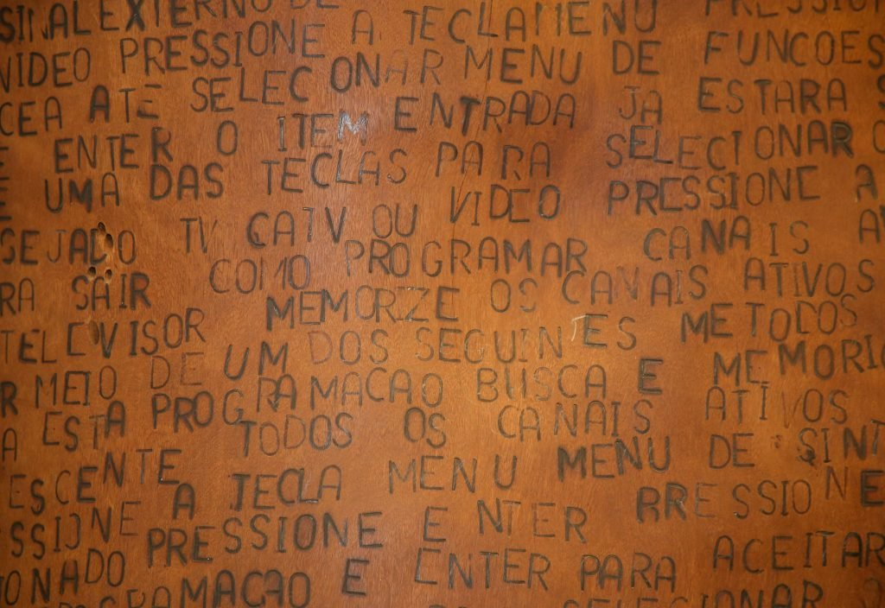
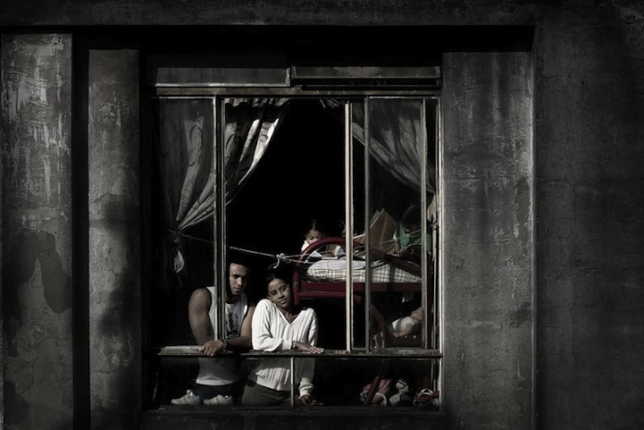
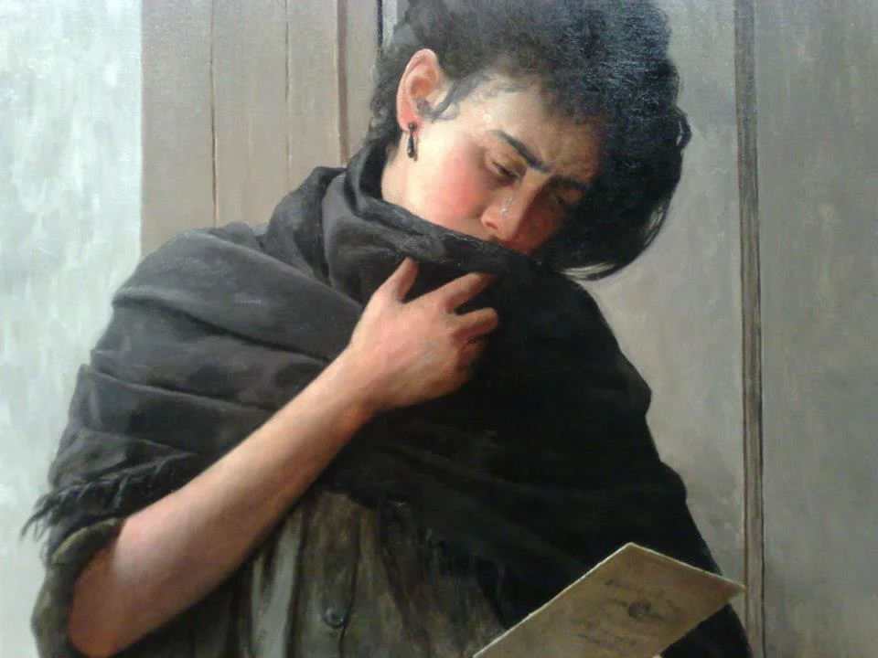
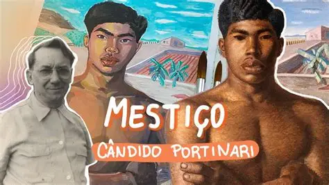

Língua Solta foi a primeira exposição temporária após a reabertura do Museu da Língua Portuguesa em 2021. Curada por Fabiana Moraes e Moacir dos Anjos, ela celebra a língua como expressão cultural, política e social. A mostra reúne obras que revelam como o idioma é usado para resistir, comunicar e transformar, com destaque para objetos do cotidiano, arte popular e contemporânea.

Janelas do Edifício Prestes Maia, de Julio Bittencourt, retrata a vida em ocupações urbanas no centro de São Paulo. A série fotográfica revela a dignidade e diversidade dos moradores através das janelas, transformando o edifício em símbolo de resistência social. Bittencourt é conhecido por seu olhar humanista e crítico sobre a cidade.

Saudade, pintada por Almeida Júnior em 1899, é uma das obras mais icônicas da Pinacoteca. O artista paulista foi um dos pioneiros do realismo no Brasil. Nesta pintura, ele retrata com sensibilidade o sentimento nostálgico do povo brasileiro, capturando a melancolia e a introspecção com maestria técnica e emocional.
